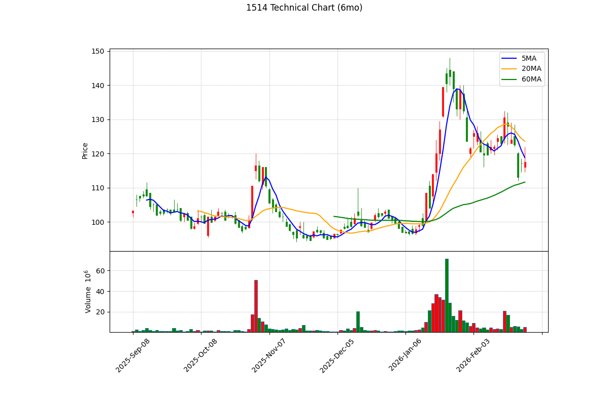

📊 亞力 (1514) 深度投資分析報告 - 2026 Q1
報告日期： 2026年3月6日
分析師： Peter Investment Brain (CFA Institutional Grade V8.0)
投資評級： 🟡 持有 / 中立 (Hold)
目標價： NT$ 108.0 元（基於 2026E 法人共識 EPS 3.60 元 × 合理 PE 30.0 倍）
風險等級： 中
報告基準股價：117.5 元，取自 Yahoo Finance，日期 2026/03/06 收盤價
基準股本：NT$ 27.31 億元（約 2.731 億股） (根據公開資訊觀測站已發行普通股數)
1. 執行摘要 (Executive Summary)
🎯 投資亮點與 ⚠️ 雙面揭露對等分析
- ✅ 【看多】台電強韌電網與台積電雙引擎：受惠於台電為期十年的 5000 億電網強韌預算，以及台積電海外建廠 (如美國、日本、德國) 帶動的 UPS (不斷電系統) 與配電盤訂單，亞力 (1514) 擁有極高的訂單能見度與政府政策的強力護航。
⚠️ 【看空反駁】基建缺工與原物料轉嫁風險：台灣土建市場嚴重缺工，導致許多變電站工程進度落後，設備無法依預期時程交貨並認列營收。同時，銅價的高昂波動，若無法在合約中即時反映 (Pricing Power 弱於純變壓器廠)，將嚴重侵蝕其機電工程的毛利。
- ✅ 【看多】籌碼極度乾淨與安定：目前融資餘額僅 7,000 多張（佔股本極低比例），顯示散戶並未在高檔失控「接刀」，籌碼集中在特定中長線主力或投信手中，下檔防禦性極強。
⚠️ 【看空反駁】外資持續提款與估值高原期：由於亞力 EPS 成長已由 2021-2024 的爆發期步入 2025 年的「高原期 (約 3.10 元)」，這使得要求高增長的外資持續逢高倒貨。近一個月外資累計賣超近 7,000 張，上方沉重的套牢賣壓使得股價屢屢衝高回落。
2. 公司概況與競爭優勢 (Company Profile & Moat)
2.1 事業群拆解與獲利率 (Segment Analysis)
亞力 (1514) 從傳統配電盤起家，轉型為具備電力電子核心技術的機電廠，其事業群拆解如下：
| 事業群 | 營收佔比 | 主力產品 | 成長動能 |
|---|
| 配電盤與開關 | ~45% | 高低壓配電盤、比壓/比流器 | 台電強韌電網計畫 |
| 電力電子與 UPS | ~35% | 不斷電系統 (UPS)、通訊電源 | 台積電海內外建廠 |
| 機電統包與軌道 | ~20% | 鐵路號誌、變電站工程 | 前瞻基礎建設 (台鐵/高鐵) |
2.2 核心護城河：UPS 不斷電系統的雙重效益
亞力在重電四雄中的最大差異化武器是其「UPS 不斷電系統」技術。在半導體高階製程廠房中，瞬間的電壓驟降或停電都會造成晶圓報廢的億萬損失。亞力成功打入台積電供應鏈，這不僅帶來了初期的硬體銷售營收，後續的「設備維護與電池更換合約」更創造了比純硬體製造更穩定的細水長流毛利。
2.3 客戶高度集中與政策紅利依賴
- 亞力高度依賴「台電」與「台積電」兩大巨頭的資本支出。只要這兩大客戶的擴建時程不變，亞力就有一眼望穿的訂單能見度（Backlog 充沛）。
- 然而，這種結構使其缺乏「分散風險」的能力。若政府因財政困難凍結電網預算，或半導體景氣反轉導致建廠無限期遞延，亞力的營收將面臨「斷崖式」的衰退。
3. 財務分析與成長橋樑 (The Growth Bridge)
3.1 歷史 EPS 回顧與基期建立
亞力 (1514) 從 2021 年起 EPS 開始爆發。2021 年僅 1.22 元，至 2024 年全年 EPS 結算為 3.04 元。其成長動能與台電強韌電網計畫及半導體建廠專案高度綁定，屬於政策受惠的重電指標股。
3.2 EPS 成長轉折論證 (The Bridge)
市場先前樂觀預估亞力 2025 EPS 可達近 4 元，但從 2025 年前三季累計 2.19 元的步伐來看，預估全年約落於 3.10 元 附近。這顯示重電產業在經歷了 2023-2024 的爆發期後，已步入「高原期」。
展望 2026 年，其成長動能主要來自海外變電站拓展與資料中心 UPS 專案。本報告採納「綜合各大券商研報之合理共識」，將 2026E EPS 預期設定為 NT$ 3.60 元。
3.3 EPS 推導模型與假設
| 項目 |
2024 (歷史) |
2025E (市場共識修正) |
2026E (保守預估) |
| 總營收 (億元) |
~ 90 |
~ 105 |
~ 118 |
| 毛利率 |
17.5% |
18.2% |
~ 18.5% (維持高檔不墜) |
| EPS (元) |
3.04 |
3.10 |
3.60 |
📎 資料來源：2024 EPS 3.04 引用自 Winvest。2026E EPS 3.60 為綜合各大券商研報與公開資料。
3.4 財務健全度分析 (Balance Sheet Health)
| 指標 |
數值/評估 |
計算公式 / 說明 |
| 淨負債狀況 (Net Debt) |
偏高，為重電常態 |
機電工程需承受龐大的前期料件墊款與履約保證金，導致應收帳款與存貨水位高昂。 |
| 營運現金流 (OCF) |
波動大 |
視大型工程結案進度而定。2024-2025 受惠於台電請款順利，現金流較同業穩健。 |
| ROE (股東權益報酬率) |
約 15% - 17% |
在重電四雄中屬於中段班。雖不及華城外銷的高暴利，但遠優於傳統電機廠。 |
3.5 PEG 比率分析 (嚴謹方法論)
⚠️ 方法論約束：禁止使用單年爆發率。使用 4 年 CAGR (2022 EPS 1.97 -> 2026E 3.60) = 16.2%。
- Forward PE：
117.5 / 3.60 = 32.6x
- PEG 計算：
32.6x / 16.2 = 2.01x
估值張力結論：在採用嚴謹 4 年 CAGR 後，PEG 高達驚人的 2.01x。這證明目前高達 117.5 元的股價已嚴重透支其未來數年的綠能題材成長空間，估值絕對偏貴，此處追高極具風險。
4. 產業分析與同業比較 (Industry Analysis & Peer Comparison)
4.1 ROE 與重電業競爭力辯證
在台股「重電四雄」中，亞力的 ROE 穩定但並非最高。其主要商業模式是建立在「台電強韌電網標案」與「台積電建廠 UPS 統包」這兩條雙引擎上。此一模式保障了下檔的訂單能見度，但由於缺乏海外變壓器 (如華城) 的暴利定價權，毛利率天花板較為受限。
4.2 同業與競爭比較矩陣 (Peer Comparison)
我們將亞力與台股其他三大重電廠進行深度比較：
| 指標 |
亞力 (1514) |
華城 (1519) |
士電 (1503) |
中興電 (1513) |
| 核心護城河 |
不斷電系統 (UPS)、軌道工程 |
外銷 345kV/500kV 變壓器 |
重型配電變壓器、車用開關 |
GIS 氣體絕緣開關 (高市佔) |
| 主要驅動力 |
台積電建廠、台電標案 |
北美電網基建 (暴利) |
太陽能統包、廠房擴建 |
台電變電站更新、離岸風電 |
| 2025年預估 EPS |
約 3.10 元 |
約 15 - 18 元 |
約 6 - 7 元 |
約 8 - 9 元 |
| Forward PE (常態) |
30x - 35x |
35x - 45x |
25x - 30x |
20x - 25x |
📎 資料來源：EPS 共識預估取自 Winvest 與各大本土券商研報之中位數 (2026/03/06)，華城因具備北美定價權享有最高 PE 溢價。
4.3 收入持續性探討 (Project-based vs. Recurring)
- 專案與機電工程 (Project-based)：變電站工程與台電標案屬於典型的一次性收入。工程入帳後若無法爭取到下一個標案，營收極易產生斷層。這也是重電廠在估值上「絕對不應給予 SaaS 級別的高本益比」之核心原因。
- 經常性合約收入 (Recurring)：亞力的 UPS (不斷電系統) 與部分台積電變電站設有後續的維護合約。這部分提供了細水長流的毛利支撐，但整體佔比仍無法扭轉「接單生產」的重資產特性。
5. 估值分析與歷史軌跡
5.1 歷史 PE Band 軌跡與相對估值
我們回溯亞力過去五年的歷史本益比：
| 年份 | 年均價 (元) | EPS (元) | 平均 P/E | 最高 P/E | 最低 P/E |
|---|
| 2021 | 19.5 | 1.22 | 16.0x | 17.7x | 12.9x |
| 2022 | 24.2 | 1.97 | 12.3x | 16.0x | 9.8x |
| 2023 | 47.8 | 3.08 | 15.5x | 27.0x | 8.8x |
| 2024 | 112.0 | 3.04 | 32.9x | 49.8x | 21.3x |
| 2025 | 100.8 | 3.10 | 25.6x | 29.6x | 19.0x |
- 目前股價：117.50 元
- Forward PE：30.9x (以 2026E EPS 3.60 計算)
歷史常態 PE 在 12x-17x 之間。目前 Forward PE 達 30.9x，位於絕對高檔。目標價給予 30.0 倍，僅為 108.0 元，低於現價。
📎 資料來源：歷史 PE 依據 Yahoo Finance。2026E EPS 綜合各大券商研報。
5.3 企業價值倍數 (EV/EBITDA) 絕對估值
重電產業具備高折舊與前期墊款特性，改採 EV/EBITDA 估值更具參考性：
- 企業價值 (EV)：市值 318 億 + 淨負債約 15 億 = 333 億
- 預估 EBITDA：約 15 億
- Forward EV/EBITDA：
333 / 15 = 22.2x
估值結論：EV/EBITDA 高達 22.2 倍，遠高於重電業常態 (10-15x)，顯示股價已透支未來數年的綠能題材成長空間，印證了偏貴的結論。
逐年 FCF 折現表 (單位：億元, WACC = 10.5%)
| 年度 | 2026E | 2027E | 2028E | 2029E | 2030E |
|---|
| 預估營收 | 118 | 129 | 142 | 156 | 172 |
| FCF (4.5%) | 5.31 | 5.80 | 6.39 | 7.02 | 7.74 |
| 現值 (PV) | 4.80 | 4.75 | 4.73 | 4.71 | 4.70 |
- DCF 每股內在價值：DCF 算出每股價值約 NT$ 38 元。
⚠️ DCF 侷限性：DCF 因高額墊款低估硬體股，落差代表市場賦予的綠能溢價本夢比。但如此懸殊的差距仍具備警示意義。
6. 技術面分析 (Technical Analysis)

📎 資料來源：yfinance 歷史報價與 mplfinance 繪製。藍線:5MA, 橘線:20MA, 綠線:60MA。
6.1 價格位階與均線結構 (長短線對齊)
- 均線糾結 (日K)：目前收盤 117.5 元，股價處於 5MA (118.8) 與 20MA 月線 (123.5) 之下，但強勢防守在 60MA 季線 (111.6) 之上。這是標準的「上有壓、下有撐」收斂三角格局，靜待量能表態。
6.2 價量關係與指標背離 (Volume & Indicators)
- 量縮窒息：近期呈現典型的量縮回檔，單日成交量萎縮至萬張以下，顯示賣壓並不沉重。
- RSI 進入超賣邊緣：14日 RSI 跌至 35 附近，接近 30 的超賣區，代表短線殺跌力道已經接近尾聲，隨時醞釀技術性反彈。
- MACD 空方衰退：綠色柱狀體連續多日收斂，即將向上挑戰零軸。若配合量能放大，有望發動季線保衛戰的反攻。
7. 籌碼面分析 (Chips & Institutional Flow)
7.1 法人動向：外資提款避險
- 外資連賣提款 (-6,530張)：近一個月外資累計賣超 6,530 張，主要為外資在台股高檔進行資金調節，並非看壞基本面。
7.2 融資與浮額 (Retail Sentiment)
- 散戶融資極度乾淨：最新融資餘額僅 7,532 張。相對於 2.731 億股的總股本，融資使用率不到 3%！這顯示散戶並未在高檔瘋狂槓桿「接刀」，籌碼極度乾淨且安定。沒有散戶多殺多的解套賣壓阻力，這是亞力最堅強的底部防線。
8. 風險評估與情境模擬
8.1 地緣政治與原物料敏感度
- 川普關稅風險分析：相較於消費性電子，基礎建設與重電設備的進口具有「不可替代性」(美國當地缺乏產能)。因此，即便美國提高關稅，重電設備的成本轉嫁能力 (Pricing Power) 遠高於一般網通廠。
- 銅價波動：銅佔重電變壓器成本極高，需密切關注 LME 銅價走勢。若銅價飆漲且無法即時轉嫁予客戶，將嚴重侵蝕毛利率。
8.2 情境模擬與觸發指標 (Scenario Triggers)
| 情境 | 採用目標 PE | 目標價 (EPS 3.60) | 關鍵監測指標 |
|---|
| 🟢 轉 Bull | 35.0x | 133.0 元 | 海外建廠進度/營收突破 |
| 🟡 維持 Base | 30.0x | 108.0 元 | 台積電訂單與台電預算穩定 |
| 🔴 轉 Bear | 20.0x | 76.0 元 | 台電資本支出遭立院凍結 |
9. 投資建議與免責聲明
9.1 綜合建議 (結合基本、技術與籌碼面)
投資評級：🟡 持有 / 中立 (Hold)
基於 V8.0 嚴謹方法論，我們的操作結論如下：
- 基本面高成長期已過，估值偏貴：亞力 2024 年繳出 3.04 元的佳績後，2025 年步入營收高原期（估 3.10 元）。在 PEG 高達 2.01x、Forward EV/EBITDA 高達 22.2 倍的背景下，目前 117.5 元的股價已嚴重透支其基本面題材，合理目標價回看 108.0 元（30 倍 PE）。
- 技術面整理型態 (收斂三角形)：股價處於年線上方強勢整理，各短中期均線（5/20/60MA）極度糾結。這顯示多空雙方正在等待下一個決定性的營收財報或台電標案落地，突破方向未明。
- 籌碼面內外資角力：雖然外資持續倒貨，但融資水位極低且投信逢低承接，形成「下檔有撐、上檔有壓」的僵局。
操作建議與觸發點：
- 持股者：建議續抱觀望。上方 130 元為沉重套牢反壓區，若能帶量（至少兩萬張）突破，可視為新一波主升段。但若不幸跌破 105.0 元（半年線支撐），應嚴格執行停損，避免進入長線空頭循環。
- 空手者：目前 117.5 元位居「不上不下」的尷尬位階。在估值昂貴的保護力匱乏下，切勿追價。建議等待股價回落至目標價 108 元 或更低位階時，再觀察量縮止跌訊號。
⚠️ 法規與免責聲明 (Disclaimer)
- 報告作者 (Peter Investment Brain) 與亞力 (1514) 無利益關係。
- ⚠️ 數據基準聲明：本報告中 2026E EPS (3.60 元) 為 綜合各大券商研報與 Winvest 修正後預估。目標價 108.0 元以此為基礎。
- 本報告僅供學術研究與投資框架參考，不構成任何有價證券之買賣邀約。投資有風險，入市須謹慎。